Visual Illusions

- Visual transformations of viewed objects
-
Common causes
- Optical disorder
- Retinocortical disorder
- Encephalopathy
- Psychotropic medication
- Recreational drug use
- Faint, slightly displaced, reduplication of a viewed image that persists when one eye is covered (“ghosting”) = refractive error, corneal or lens imperfection
- One or more haloes around an image = corneal edema
- Minified image (“micropsia”) = maculopathy if monocular; vision-related cortex lesion if binocular and appearing identical to both eyes
- Magnified image (“macropsias”) = maculopathy if monocular; vision-related cortex lesion if binocular and appearing identical to both eyes
- Mildly distorted image (“retinal metamorphopsia”) = maculopathy; may be monocular or binocular, but if binocular, the distortion never appears identical to both eyes
- Grossly (and sometimes grotesquely) distorted image (“cerebral metamorphopsia”, “Alice-in-Wonderland illusion”) = occipital stroke, tumor, psychotropic medications, recreational drugs, and rarely and temporarily in migraine; the distortion is always binocular and appears identical to both eyes
- Smeared image that trails behind moving object (“comet illusion”) = psychotropic medications or recreational drugs, anxiety, psychosis
- Moving object perceived as made up of multiple stationary copies of that object (“akinetopsia,” “stroboscopic vision,” “motion picture reel vision”) = occipital stroke, tumor, psychotropic medications, recreational drugs, anxiety
- Two copies of a viewed image, one less clear than the other, one of which disappears as either eye is covered (“binocular diplopia”) = ocular misalignment of any cause
- Multiple copies of a single image tailing off into homonymous hemianopia (“cerebral polyopia”) = occipital stroke, tumor
- Reduced brightness or faded color of an image = optic neuropathy
- Yellow-tinge on borders of images (“xanthopsia”) = digitalis intoxication, trazodone
- Golden brown image discoloration (“brunescence”) = cataract
- Pink image discoloration (“erythropsia”) = pseudophakia
- Blue image (“cyanopsia”) = use of phosphodiesterase inhibitor to improve penile erection
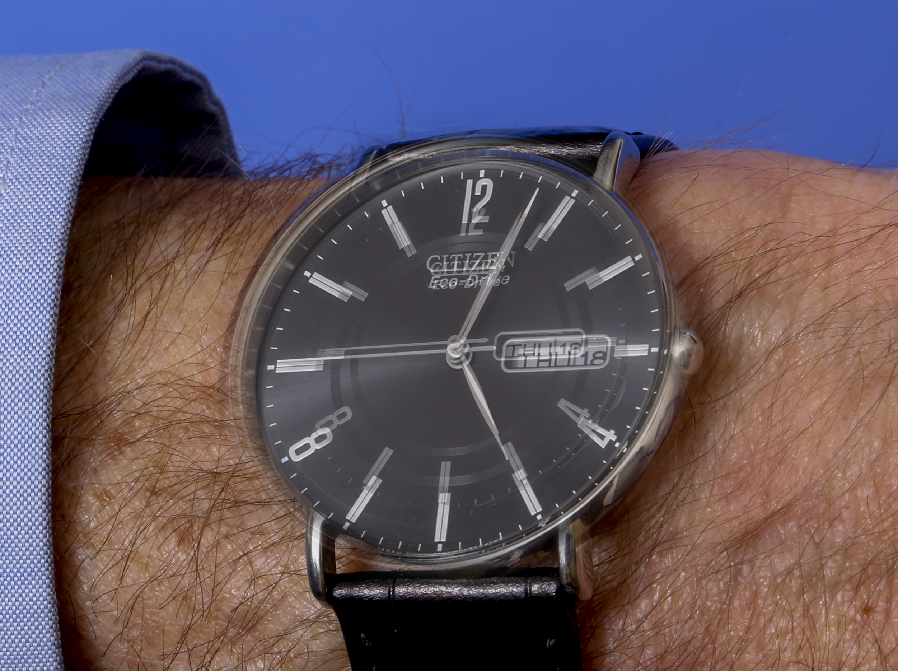
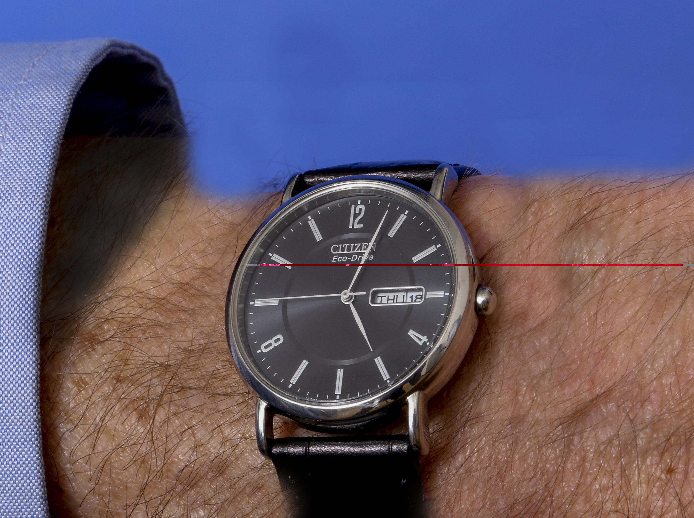
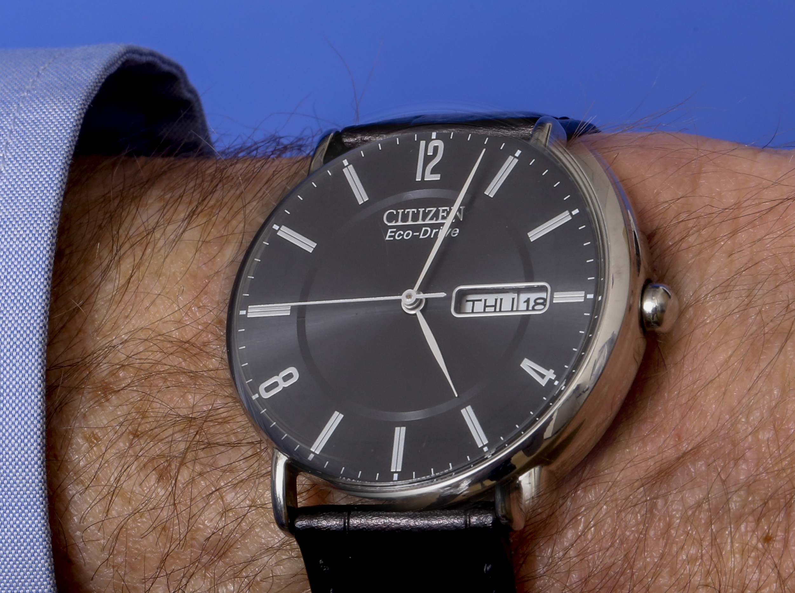
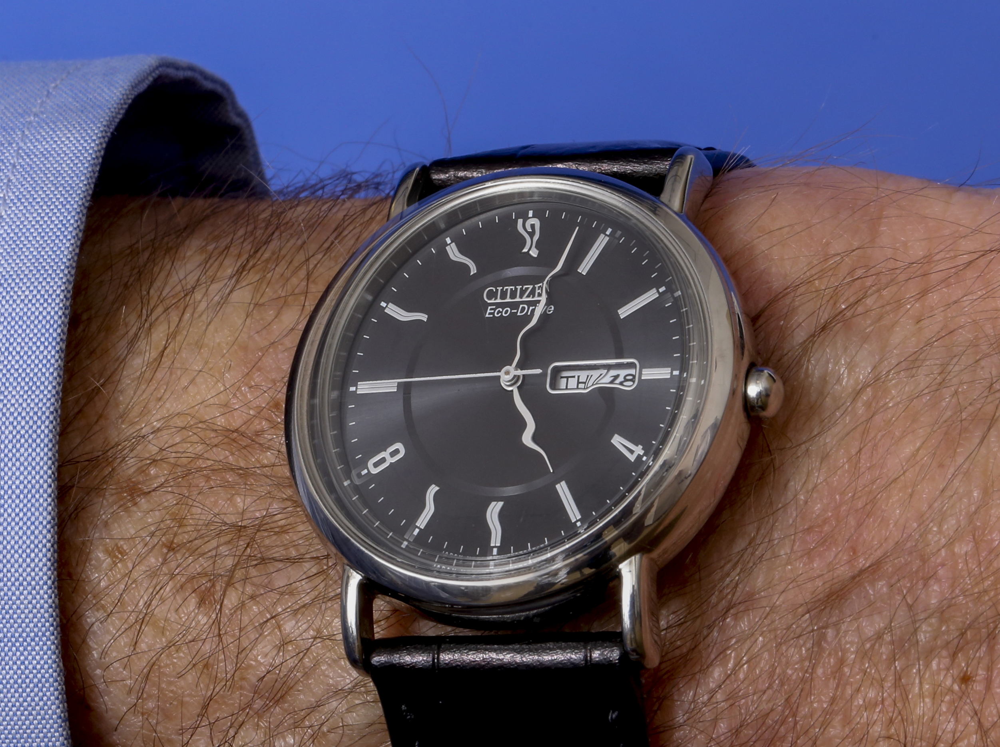
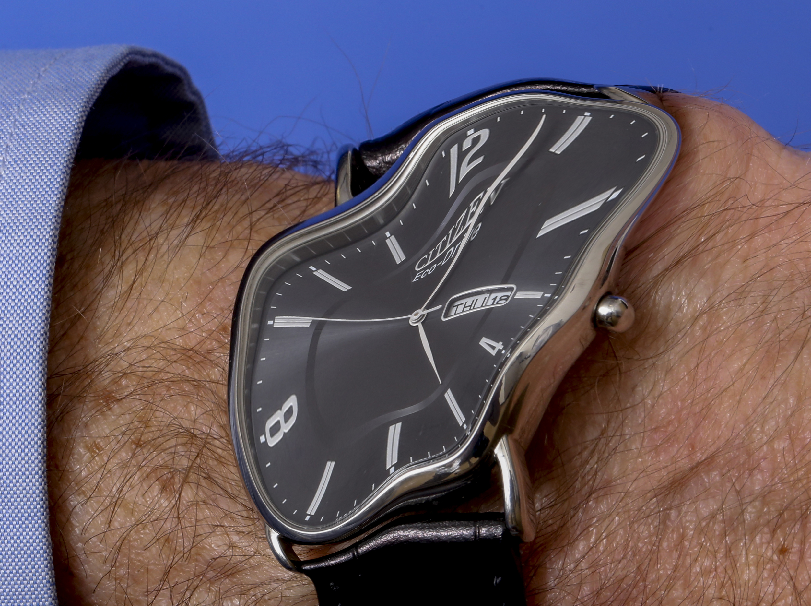
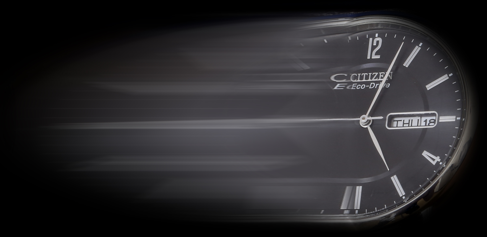
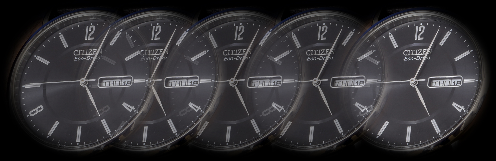
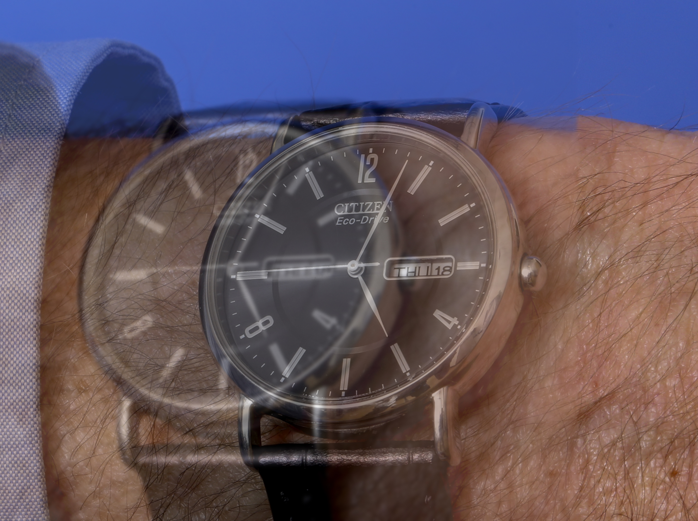
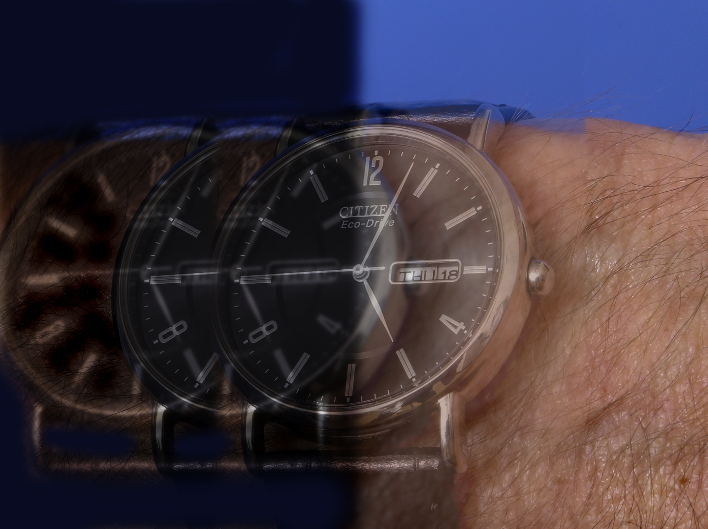
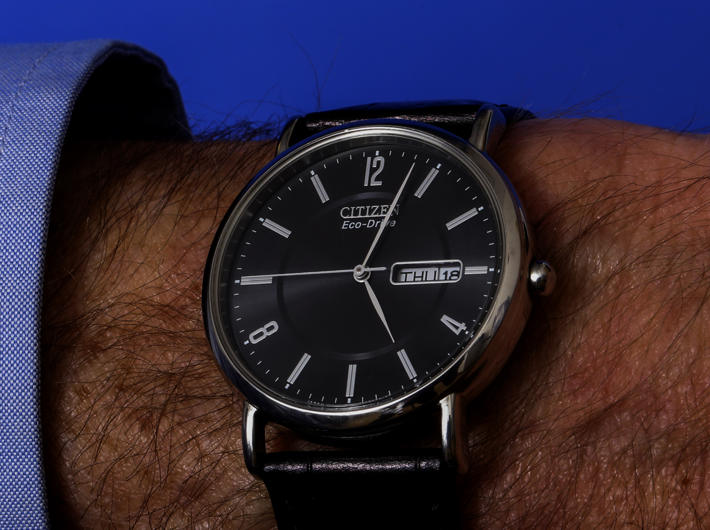
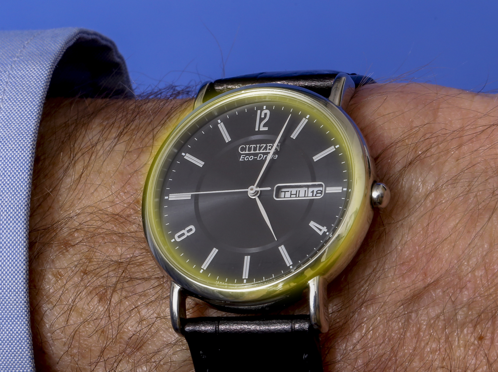
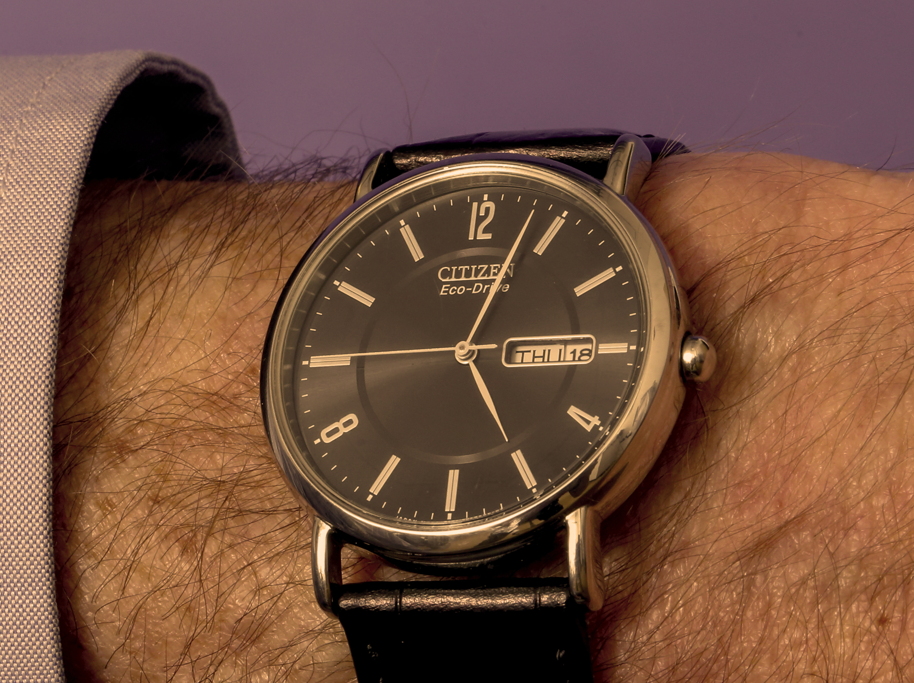
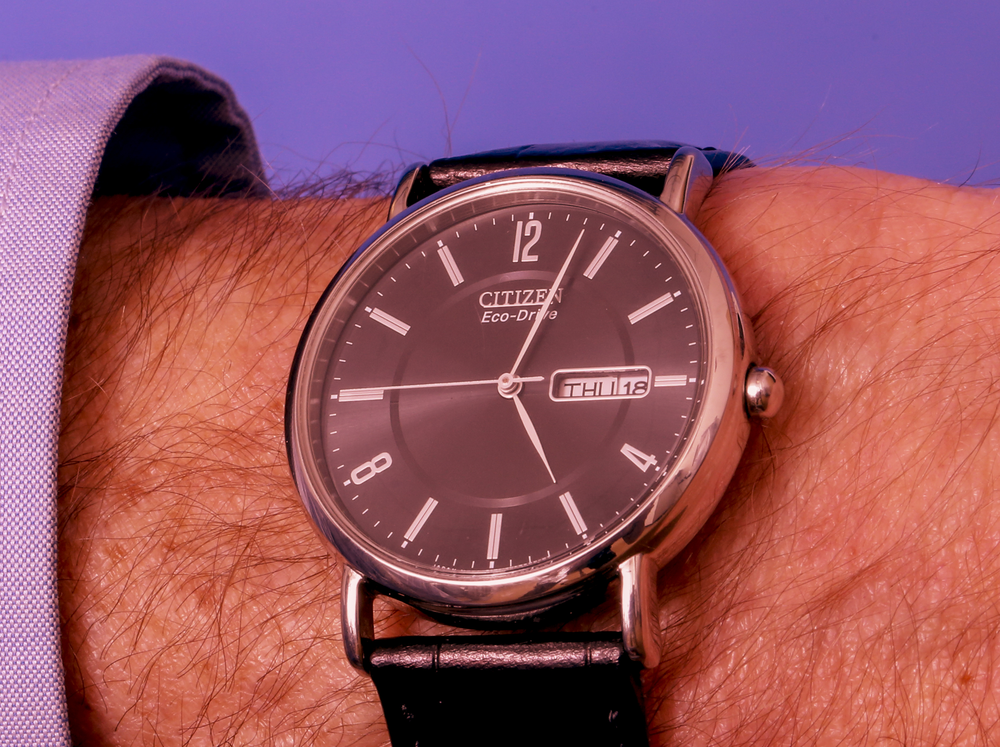
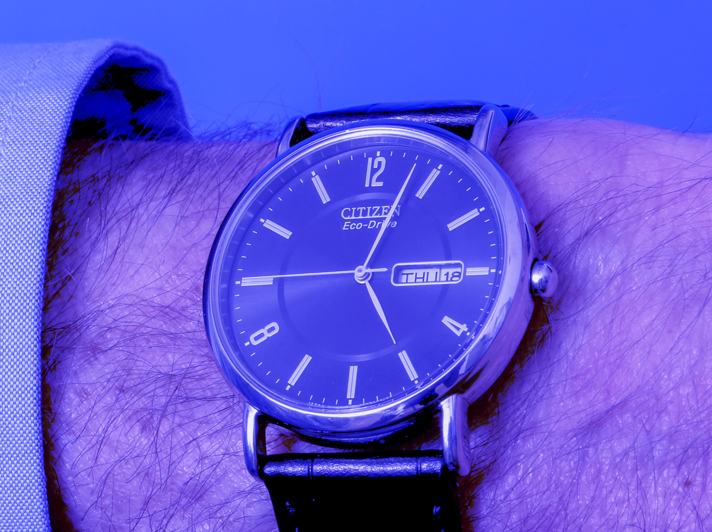
- Visual hallucinations, which are not distortions of viewed objects, but “visual figments” unrelated to what is being viewed (See Visual Hallucinations )
- Use the description of the altered image as a guide to diagnosis; confirm by examination
- Ophthalmic, systemic, and neurologic examinations usually yield a diagnosis, but…
-
Trap: medications, recreational substances, and psychosis are often overlooked as causes!